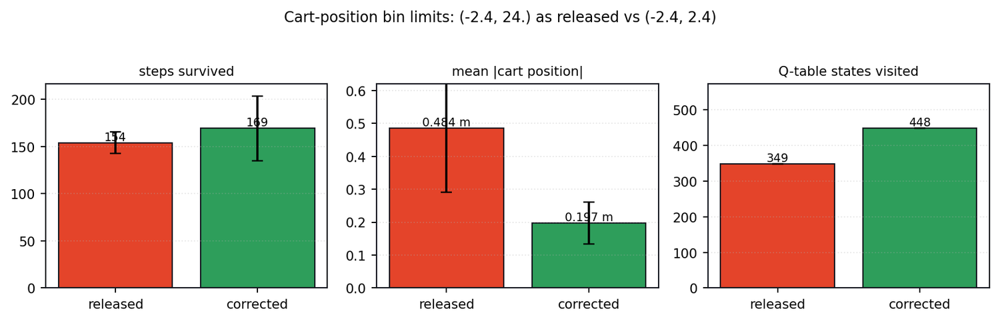
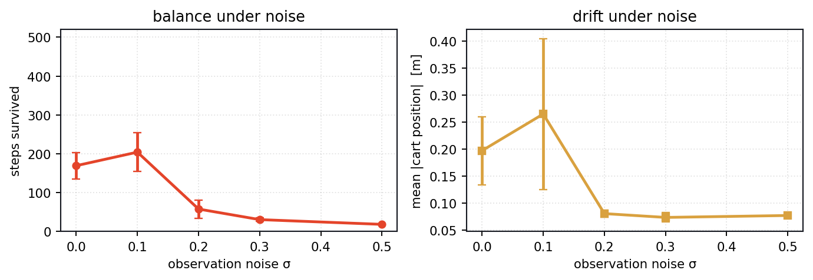
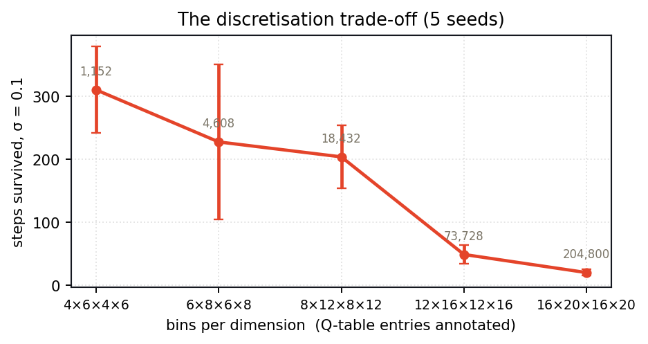
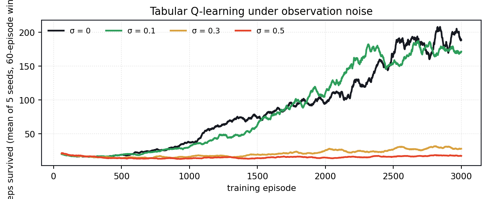

Reinforcement learning ◆ Noisy observations ◆ ECE 1508 ◆ University of Toronto ◆ 2024
Cart-pole Learning with Enhanced Adaptive Reinforcement Network. The classic balancing problem, except the agent never sees the true state — every observation arrives with Gaussian noise on it. Tabular Q-learning, DQN, PPO and SAC, compared under that noise. The whole tabular experiment runs in this page: press a button and watch a Q-table learn in a quarter of a second.
Everything below is the real experiment: Gymnasium's CartPole-v1 dynamics, the project's noise wrapper, and its tabular Q-learning, all running in your browser. Three thousand episodes take about a quarter of a second, so you can turn a knob and see the answer immediately instead of reading about it.
When the noise is above zero the dashed pole is what the agent sees; the solid one is where it actually is. Try balancing it yourself at σ = 0.3.
The original study compared Q-learning, DQN, PPO and SAC and concluded that PPO and SAC are the stable ones. Re-running the tabular half of it — five seeds, three thousand episodes each, everything in scripts/tools/run_clearnet.py — turned up three results that change how you would set the thing up.
The released QLearning.py discretises cart position over (-2.4, 24.). Almost certainly a typo for (-2.4, 2.4) — and it matters, because reachable positions then occupy 18 % of that range, so with 8 bins every legal cart position falls in bin 0 or 1 and the other six are never visited.
The surprise is what it costs. Survival barely moves: 153.9 ± 11.3 steps as released against 169.1 ± 34.1 corrected, well inside the seed spread. But the mean distance of the cart from centre goes from 0.484 m to 0.197 m — cut by two and a half times. The poster reports that "the agent still suffered from drifting during testing" and attributes it to the reward function not asking the cart to stay centred. A good part of it is that the agent could not see where the cart was.

Survival peaks at σ = 0.1 — 203.9 ± 49.9 steps against 169.1 ± 34.1 with a perfectly clean observation — and then falls off a cliff: 57 steps at σ = 0.2, 30 at 0.3, 18 at 0.5. Mild observation noise behaves like exploration and like a smoothing prior over neighbouring bins, which is exactly what a sparse tabular value function wants. Past about σ = 0.15 the noise is larger than a bin and the discretisation stops meaning anything.
The poster's version of this is that "models trained with higher noise performed better under similar noise conditions but worse when the noise level was reduced". That is true, and there is also an optimum, and it is close to the bottom of the range they swept.

The poster picks 8×12×8×12 "for its fast convergence and stability". Sweeping the grid at a fixed budget of 3,000 episodes says something sharper: 4×6×4×6 survives 310 steps and 16×20×16×20 survives 20, a fifteen-fold difference, and the poster's choice sits in the middle at 204.
This is the curse of dimensionality doing exactly what it says on the tin. A 16×20×16×20 table has 204,800 entries; three thousand episodes of a few hundred steps is on the order of half a million transitions, so most entries are visited once or never. The finer grid is not worse in the limit — it is worse at this budget, and the budget is the thing you actually have.


The environment is Gymnasium's CartPole-v1: a cart on a rail with an inverted pendulum on it, one binary action — push left or push right with a constant 10 N — and a reward of +1 for every step the pole stays up. The episode ends when the pole passes 12° or the cart passes 2.4 m, or at 500 steps.
What makes it a study rather than a tutorial is the observation wrapper. Every component of the state is corrupted before the agent sees it:
so σ scales a per-component range rather than being an absolute standard deviation — σ = 0.5 puts about a metre of noise on the cart position, which is nearly half the track.
Four controllers were compared. Tabular Q-learning quantises the four continuous states into bins and keeps one value per bin-action pair. DQN replaces the table with a network plus a target copy and a replay buffer, and converges far faster but suffers catastrophic forgetting. PPO keeps its updates inside a trust region and is the most stable over long training. SAC converges fastest of all — the entropy term removes the ε-decay schedule entirely — and needs an action-space wrapper to work on this discrete problem at all.
The reward was reshaped from the plain +1: reward the cart for staying near the middle and the pole for staying upright, and penalise heavily if the episode ends before 500 steps. That is the change the poster credits for fixing the drift — see finding 1 for the part it does not.
The original demo reel: Q-learning holding up under σ = 0.1, then the same controller as the training noise is raised, then the deep methods.
| Method | Converges | Stability |
|---|---|---|
| Tabular Q-learning | slowest | curse of dimensionality |
| DQN | fast | catastrophic forgetting |
| PPO | medium | most stable |
| SAC | fastest | stable |
The sandbox above runs assets/js/clearnet_cartpole.js, the same dynamics, noise model and Q-learning update as scripts/tools/cartpole.py. Single runs are noisy — the numbers quoted in the findings are five-seed means, and the sandbox trains one seed at a time, so expect to see the spread.
ECE 1508: Reinforcement Learning (Summer 2024) at the University of Toronto, joint work with Aravind Narayanan — equal contribution. The environment is Gymnasium's CartPole-v1.
The four controllers, the noise wrapper and the demo reel are from the course project. The five-seed re-run, the three findings above and the browser sandbox were built afterwards, on the released code.